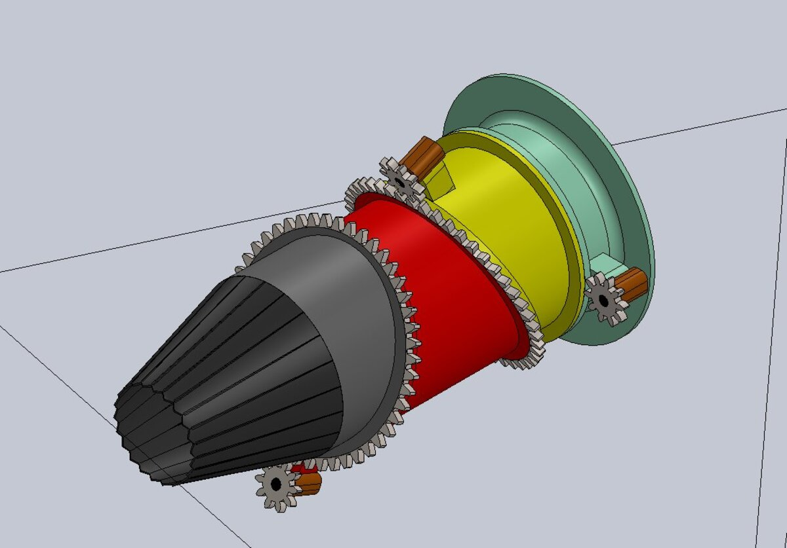
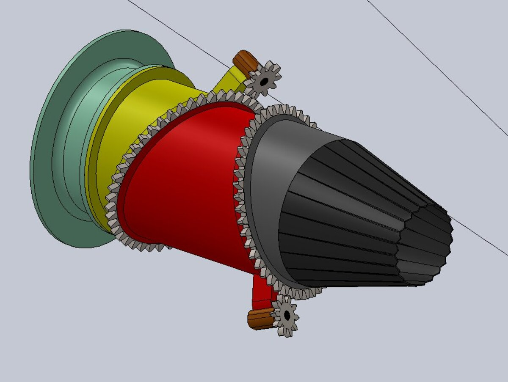
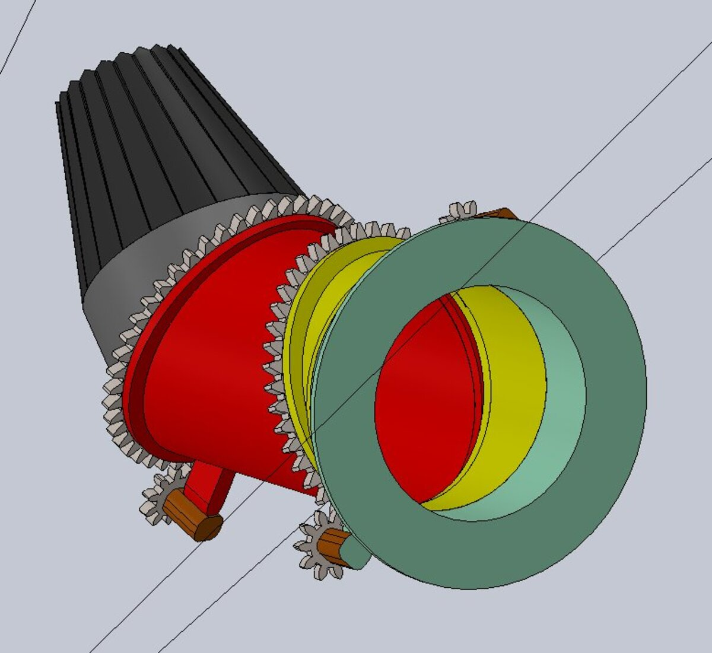

F-35B 3-Bearing Swivel Duct
Overview
The 3-Bearing Swivel Duct (3BSD) is the vectoring nozzle system that enables Short Takeoff and Vertical Landing (STOVL) capability on the F-35B Lightning II. It redirects engine exhaust thrust downward through a 3-stage rotational duct assembly, allowing the aircraft to transition between conventional forward flight and vertical hover.
This was an independent study undertaken outside of coursework. Starting from a reference CAD file, the entire assembly was reverse-engineered and rebuilt as a fully constrained parametric model in SolidWorks.
Parametric rebuild
The original reference geometry was deconstructed into its component duct sections, bearing interfaces, and actuator connection points. Each component was then remodelled parametrically so that dimensional changes propagate through the full assembly, maintaining geometric constraints across the entire thrust-deflection range.
The key challenge was capturing the non-orthogonal rotational synchronisation between the three duct stages. Each stage rotates about a different axis, and the relative rotation angles must be coordinated precisely to maintain a continuous flow path without internal volume interference.


Motion study and validation
A SolidWorks motion study was configured to simulate the full deflection sequence from horizontal (forward flight) to vertical (hover). At each deflection increment, geometric clearance was verified between adjacent duct surfaces, bearing housings, and the surrounding airframe envelope. Mechanical interference was identified at several intermediate positions and resolved through iterative geometric refinement of the duct wall profiles and bearing seat geometry.
Method log
- Reverse-engineering of reference CAD geometry into parametric components
- Fully constrained assembly with propagating dimensional relationships
- Non-orthogonal rotational synchronisation across three duct stages
- Motion study validation for geometric clearance at each deflection angle
- Interference detection and iterative resolution of volumetric conflicts